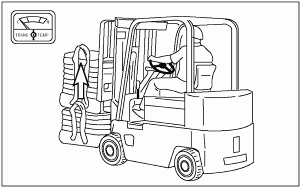

Lifting the Load Lift the load carefully and tilt the mast back a short distance.  Typical Example Tilt the mast further back to cradle the load Typical Example Operate the lift truck in reverse until the load is clear of the other material. Lower the cradled load to the travel position. Note: Lift and tilt speeds are controlled by engine rpm.